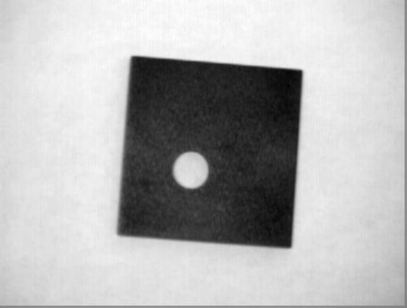
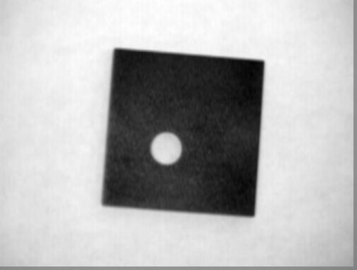

image 1

image 2
image 1

image 2
mask 2 blurs an image a small amountimage 1
image 2
The advantage of a small mask is that it keeps the image sharp, and is computasionally in expensive.
If I wanted to identify the horizon in an image I would use a mask such as [2,2,2;1,1,1;0,0,0] as it would increase the difrence between the dark sea and the light sky